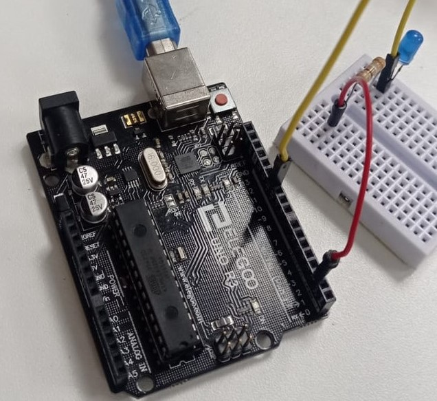
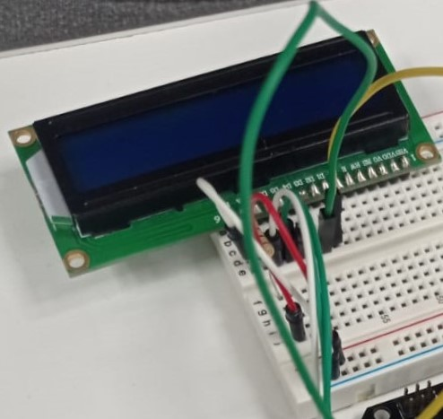

Semana 9
Sensor de temperatura : Sistema que detecta variaciones en la temperatura del aire o del agua y las transforma en una señal eléctrica. Durante la primera sessión se realizó un circuito en Arduino que mantenia como objetivo principal el encendido de un foco led de forma automática al captar una temperatura mayor 28 grados y se apague a una menor.Los componentes fueron: Protoboard, una luz led, dos cables, un sendor de temperatura y una resistencia de 220 Ω (ohmios)
Pantalla LCD: Viene del acrónimo de Liquid Crystal Display (en español Pantalla de Cristal Líquido) cuenta con dos filas, de dieciséis caracteres cada una, que se utiliza para mostrar información, por lo general alfanumérica.
Se realizó la programación de un circuito en Arduino con una pantalla LCD con la finalidad que aparezcan los nombres de cada integrante del equipo en su visor.Los Componentes fueron: Protoboard, resistencia 220 Ω (ohmios), pantalla LCD (16x2), seis cables
En la segunda sessión de clases se habló sobre programas ideales para realizar un diagrama de flujo y como crear subprogramas dentro de ellos.Por último, se habló sobre el diseño 3D,el cual consiste en utilizar software para crear una representación matemática de un objeto o una forma tridimensionales.Los programas más utilizados son: Tinkercard, FreeCard,Blender y Inkscape.